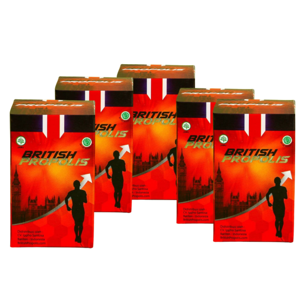

<!DOCTYPE html>
  <html>
    <head>
      <!--Import Google Icon Font-->
      <link href="https://fonts.googleapis.com/icon?family=Material+Icons" rel="stylesheet">
      <!--Import materialize.css-->
      <link type="text/css" rel="stylesheet" href="css/materialize.min.css"  media="screen,projection"/>
      <link rel="stylesheet" type="text/css" href="css/style.css">
      <link rel="icon" href="img/50.png">
      <!--Let browser know website is optimized for mobile-->
      <meta name="viewport" content="width=device-width, initial-scale=1.0"/>
    </head><!DOCTYPE html>
    <html>
    <head>
      <title>BRITISH PROPOLIS</title>
    </head>
    <body>
      
    </body>
    </html>

    <body id="home" class="scrollspy">
      <div class="navbar-fixed">
    <nav class=" red lighten-1">
      <div class="container">
        <div class="nav-wrapper">
          <a href="#home" class="brand-logo"></a>
          <a href="#" data-target="mobile-nav" class="sidenav-trigger"><i class="material-icons">menu</i></a>
          <ul class="right hide-on-med-and-down">
            <li><a href="#kandungan">Kandungan</a></li>
            <li><a href="#order">Order</a></li>
            <li><a href="#testimoni">Testimoni</a></li>
            <li><a href="#aturan">Aturan Pakai</a></li>
          </ul>
        </div>
      </div>
    </nav>
  </div>

  <!-- sidenav -->
  <ul class="sidenav" id="mobile-nav">
    <li><a href="#kandungan">Kandungan</a></li>
            <li><a href="#order">Order</a></li>
            <li><a href="#testimoni">Testimoni</a></li>
            <li><a href="#aturan">Aturan Pakai</a></li>
  </ul>
  <!-- akhir sidenav -->
  <!-- slider -->
  <div class="slider">
    <ul class="slides">
      <li>
         <!-- random image -->
        <div class="caption center-align">
          <h3>BRITISH PROPOLIS</h3>
          <h5 class="light grey-text text-lighten-3">Pilihan Para Ustadz</h5>
        </div>
      </li>
      <li>
         <!-- random image -->
        <div class="caption right-align">
          <h3>Stock Banyak</h3>
          
        </div>
      </li>
      <li>
         <!-- random image -->
        <div class="caption left-align">
          <h3>British Propolis</h3>
          <h5 class="light grey-text text-lighten-3">dapat membantu menjaga stamina tubuh</h5>
        </div>
      </li>
    </ul>
  </div>
  <!-- akhir slider -->
  <!-- about -->
  <section id="kandungan" class="about scrollspy">
    <div class="container">
      <div class="row">
        <h3 class="center light grey-text text-darken-3">Kandungan British Propolis</h3>
        <div class="col m6 light">
          	
          </div>
        <div class="col m6 light">
          <ul class="collection">
		<li class="collection-item">Mengandung semua Vitamin kecuali vitamin K.</li>
		<li class="collection-item">Mengandung Antivirus, Antibakteri, Anti Jamur, Anti Radang dan Antibiotik alami.Efek dari manfaat propolis lebih cepat dirasakan (dalam 21 hari atau kurang sudah terasa efeknya).</li>
		<li class="collection-item">Kadar Flavonoid-nya 4x lebih besar dibandingkan dengan produk propolis di pasaran.</li>
		<li class="collection-item">Dihasilkan dari lebah terbaik yang hidup di 4 musim (Inggris).</li>
	</ul>
        </div>
        
        <div class="col m6 light">
          <ul class="collection">
		<li class="collection-item">Memiliki 100% kandungan propolis tanpa bahan campuran apapun.</li>
		<li class="collection-item">Propolis diolah dengan teknologi mutakhir Inggris, sehingga terjaga mutu dan khasiat propolisnya.</li>
		<li class="collection-item">Aroma propolis-nya juga berkhasiat sebagai Aromatherapy</li>
		<li class="collection-item">Dari segi kemasan, British Propolis lebih aman, simple dan exclusive. Memakai pipet dari kaca untuk menjaga mutu propolis dan terhindar dari kandungan kimia berbahaya.</li>
    <li class="collection-item">Bukan produk MLM, Tidak Mengandung Alkohol.</li>
    <li class="collection-item">Kaya akan flavonoid, minyak atsiri, polifenol, asam amino, enzim dan mineral.</li>
    <li class="collection-item">Punya izin BPOM, sertifikasi halal dari MUI, dan Komite Halal Inggris (cek per 6 bulan).</li>
	</ul>
        </div>
        <div class="col m6 light">
        
        </div>
      </div>
    </div>
  </section>
  <!-- akhir about -->
  <!-- jurusan -->
  <section id="order" class="jurusan grey lighten-3 scrollspy">
    <div class="container">
      <div class="row">
        <div class="light center grey-text text-darken-3"><h3>Order Sekarang</h3></div>
        <div class="col m4 s12">
          <div class="card-panel center">

            
            <h5>1 Botol BP</h5>
            <p>Garansi barang pecah dengan menyertakan video</p>
            <h6>Rp 250.000/botol </h6> 
             <a href="https://api.whatsapp.com/send?phone=6281313337222&text=Halo,%20saya%20mau%20order%20british%20propolisnya/" target="_blank"><button type="submit" class="btn blue darken-2">Beli 3 Botol</button></a>
          </div>
        </div>
        <div class="col m4 s12">
          <div class="card-panel center">

            
            <h5>3 Botol BP</h5>
            <p>Garansi barang pecah dengan menyertakan video
            </p>
            <h6>Rp 250.000/botol </h6>
            <a href="https://api.whatsapp.com/send?phone=6281313337222&text=Halo,%20saya%20mau%20order%20british%20propolisnya/"target="_blank"><button type="submit" class="btn blue darken-2">Beli 3 Botol</button></a>
 
          </div>
        </div>
        <div class="col m4 s12">
          <div class="card-panel center">

            
            <h5>5 Botol BP</h5>
            <p>Garansi barang pecah dengan menyertakan video</p>
            <h6>Rp 250.000/botol </h6>
            <a href="https://api.whatsapp.com/send?phone=6281313337222&text=Halo,%20saya%20mau%20order%20british%20propolisnya/" target="_blank"><button type="submit" class="btn blue darken-2">Beli 3 Botol</button></a>
          </div>
        </div>
      </div>
    </div>
  </section>
  <!-- akhir card -->
  <!-- testimoni -->
  <section id="testimoni" class="Portfolio scrollspy">
      <div class="container">
        <h3 class="light center grey-text text-darken-3">Testimoni</h3>
        <div class="row">
          <div class="col m3 s12">
            
          </div>
          <div class="col m3 s12">
            
          </div>
          <div class="col m3 s12">
            
          </div>
          <div class="col m3 s12">
            
          </div>
        </div>
        <div class="row">
          <div class="col m3 s12">
            
          </div>
          <div class="col m3 s12">
            
          </div>
          <div class="col m3 s12">
            
          </div>
          <div class="col m3 s12">
            
          </div>
        </div>
      </div>
    </section>
    <!-- akhir portfolio -->
    <!-- contact -->
    <section id="aturan" class="about grey lighten-3 scrollspy">
        <div class="container">
          <div class="row">
            <h3 class="center light grey-text text-darken-3">Aturan Minum BRITISH PROPOLIS</h3>
            <div class="col m6 light">     

1 botol British Propolis memiliki ukuran 6 ml (sekitar 120 tetes). Manfaat optimal dari pemakaian akan terasa dalam waktu kurang lebih 21 hari.
<br> <br>
<strong>>> Aturan Minum British Propolis: </strong>
<br> <br>
<strong>* Dosis Dewasa </strong>
<br> <br>
Teteskan 5 sampai 7 tetes British Propolis ke dalam 1/2 gelas air hangat.
<br> <br>
Aduk secara merata.
<br> <br>
Konsumsi 2X sehari pada pagi dan malam hari dengan dosis serupa.
<br> <br>
<strong>* Dosis untuk Anak Usia 5-12 Tahun </strong>
<br> <br>
Teteskan 2-3 tetes British Propolis ke dalam 50 ml air hangat (suam-suam kuku).
<br> <br>
Konsumsi 2X sehari pagi dan malam hari dengan dosis serupa.

              </div>
            <div class="col m6 light">
              

* Anak di Bawah Usia 3-4 tahun:
<br> <br>
Teteskan 1-2 tetes British Propolis ke dalam 1 sendok teh air hangat.
<br> <br>
Minum 1X sehari.
<br> <br>
<strong>>> Perhatian! </strong>
<br> <br>
Beri jeda 1 jam bila sedang mengonsumsi obat dokter.
<br> <br>
Untuk yang berusia di atas 65 tahun, maksimal 3 tetes 2x sehari.
<br> <br>
Aturan minum untuk bayi dibawah 1 tahun disarankan melalui ibunya yang mengkonsumsi (nutrisi akan masuk melaui ASI).

              </div>
          </div>
        </div>
      </section>
    <!-- footer -->
    <footer class=" red lighten-1 white-text center">
      <p class="flow-text">Shugi Diamond Shop</p>
    </footer>
    <!-- akhir footer -->
      <!--JavaScript at end of body for optimized loading-->
      <script type="text/javascript" src="js/materialize.min.js"></script>
      <script type="text/javascript">
        const sideNav = document.querySelectorAll('.sidenav');
        M.Sidenav.init(sideNav);

        const slider = document.querySelectorAll('.slider');
        M.Slider.init(slider, {
          indicators: false,
          height: 300,
          transition: 600,
          interval: 3000
        });
        const parallax = document.querySelectorAll('.parallax');
        M.Parallax.init(parallax);

        const materialbox = document.querySelectorAll('.materialboxed');
        M.Materialbox.init(materialbox);

        const scroll = document.querySelectorAll('.scrollspy');
        M.ScrollSpy.init(scroll, {
          scrollOffset : 50
        });

      </script>
    </body>
  </html>